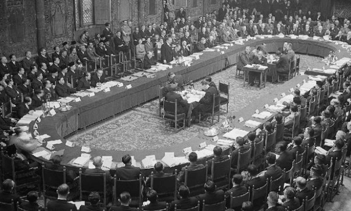

Adanya Konferensi Meja Bundar (KMB) antara Indonesia dengan delegasi Belanda menghasilkan keputusan pokok bahwa kerajaan Balanda mengakui kedaulatan Indonesia sepenuhnya tanpa syarat dan tidak dapat dicabut kembali kepada RIS selambat-lambatnya pada tanggal 30 Desember 1949.
Dengan diteteapkannya konstitusi RIS, sistem pemerintahan yang digunakan adalah parlementer. Namun karena tidak seluruhnya diterapkan maka Sistem Pemerintahan saat itu disebut Parlementer semu